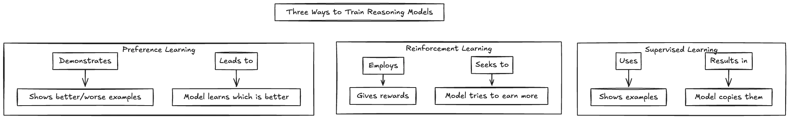
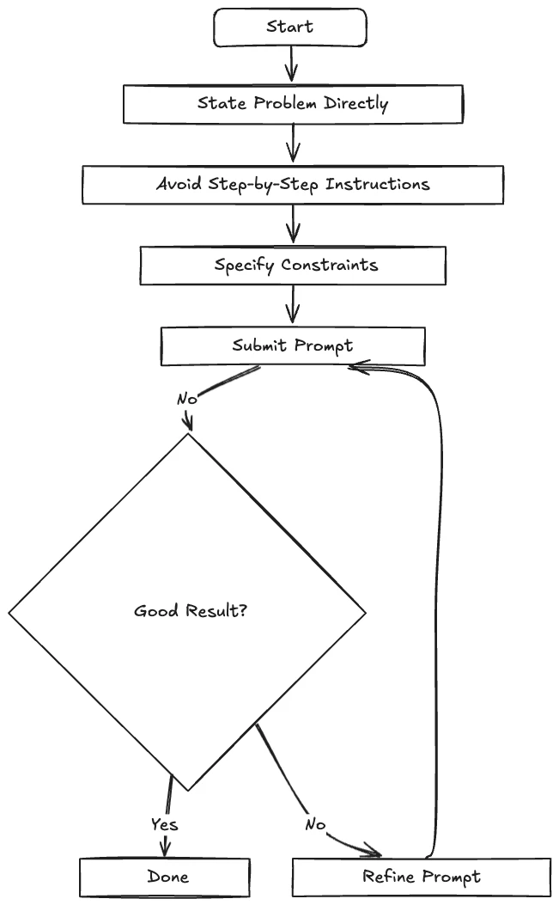

Large Language Models have been around for many years now, but a new class of LLMs has emerged in the last year: reasoning LLMs.
These models represent a shift in how LLMs process information and solve problems. They're not simply retrieving facts or following patterns. They process complex problems step by step, building logical chains of thought before producing a final answer.
But what exactly are reasoning models? How do they differ from their predecessors? What kind of new products do they enable us to build? And how do we effectively prompt them?
Learning to Reason
The transition to reasoning models didn't happen overnight. LLM developers watched their customers reach for prompting techniques like Chain-of-Thought to coax reasoning and explainability out of base models. Then they started integrating that "thought" process into the model itself. That's the path that led us to today's powerful reasoning models.
The Introduction of "Thought" in Language Models
The key innovation that paved the way for reasoning models was introducing the concept of "thought" — a sequence of tokens representing intermediate steps in human-like reasoning. Rather than treating language generation as simple autoregressive token prediction, researchers began viewing it as a more sophisticated cognitive process that could incorporate deliberate, step-by-step reasoning.
By encouraging models to generate these intermediate "thoughts," researchers and LLM app builders discovered they could improve performance on complex tasks that required reasoning.
This approach aligns with what psychologists call System 2 thinking, the slower, more deliberate cognitive process, as contrasted with the fast, intuitive System 1 thinking that characterised earlier language models. The question became whether machines designed primarily for language prediction could engage in this more deliberate form of reasoning.
Chain-of-Thought Prompting
People discovered that prompting language models with instructions like "Let's think step by step" could bring out this System 2 style in LLMs. They also saw large improvements in reasoning task performance when LLMs thought step by step.
This approach came to be known as Chain-of-Thought (CoT) prompting. When asked to solve math problems, a benchmark for reasoning ability, models using CoT showed remarkable improvements in accuracy compared to standard approaches.
For example, when tasked with a problem like "Beth bakes 4, two-dozen batches of cookies in a week. If these cookies are shared amongst 16 people equally, how many cookies does each person consume?" a model using CoT would break it down:
- First, calculate the total number of cookies: 4 × 2 × 12 = 96
- Then divide by the number of people: 96 ÷ 16 = 6
This step-by-step approach mirrors how humans solve complex problems, and it dramatically improves performance on reasoning benchmarks. The simplicity of the solution showed that with just a slight nudge, language models could be coaxed into reasoning.
Because we could elicit this reasoning behaviour even in a zero-shot setting, the capability had clearly been latent in the models all along. Further fine-tuning could enhance it.
Training Data: From Human Annotation to Automated Generation
One of the biggest challenges in developing reasoning models was the scarcity of training data. Initially, creating step-by-step reasoning examples required expensive human annotation. Experts would manually write out detailed reasoning paths, showing how to break down complex problems. This approach, while effective, simply couldn't scale to the massive datasets needed for robust training.
Instead of relying solely on human annotations, researchers developed techniques to let language models generate reasoning data themselves. This shift from human annotation to automated generation was critical in scaling up the development of reasoning models.
One innovative approach, demonstrated by DeepSeek in their R1 model development, was to bootstrap the process using "cold-start" data generation. After creating their initial DeepSeek-R1-Zero model through pure reinforcement learning (without supervised fine-tuning), they used this model to generate training examples that contained reasoning traces (<think>...</think>). This became what they called "cold-start" SFT (supervised fine-tuning) data.
These machine-generated examples then became the training data for the next iteration of models. By cycling through generation, fine-tuning, and reinforcement learning, they created a virtuous cycle where each generation of models produced better training data for subsequent versions, dramatically scaling up high-quality reasoning datasets without requiring extensive human annotation.
The Core Training Approaches
With vast quantities of high-quality training data, researchers moved beyond simply prompting models to show their reasoning (as in Chain-of-Thought) and began developing techniques to train models that have explicit reasoning processes.
Reinforcement Learning (RL)
One of the most significant discoveries highlighted in DeepSeek's research is that reasoning capabilities can emerge through pure reinforcement learning, without requiring supervised fine-tuning first. DeepSeek-R1-Zero demonstrated this approach by skipping the traditional SFT stage and applying RL directly to a pre-trained base model.
They also used two rewards:
- Accuracy rewards: Using deterministic systems to verify coding answers and mathematical responses.
- Format rewards: Employing an LLM judge to ensure responses follow expected formats, such as placing reasoning steps inside
<think>tags.
Supervised Fine-tuning (SFT)
This approach uses labelled datasets to teach models reasoning patterns. The model learns to mimic the step-by-step reasoning processes shown in examples. While effective, this method is limited by the availability and quality of training data. Still, it showed that fine-tuning models with reasoning chains significantly enhances their performance by incorporating step-by-step reasoning processes.
Combined SFT and RL Approaches
The next step is to combine supervised fine-tuning with reinforcement learning in a multi-stage process. DeepSeek-R1, their flagship reasoning model, used this approach:
- They used DeepSeek-R1-Zero to generate "cold-start" SFT data (training examples from a model that hadn't itself been trained on SFT data).
- Used this data for instruction fine-tuning.
- Applied another RL stage with accuracy and format rewards, plus a new consistency reward to prevent language mixing.
- Conducted another round of SFT data collection, generating 600K Chain-of-Thought examples from the most recent model checkpoint and 200K knowledge-based examples from their base model.
- Used these examples for another round of instruction fine-tuning.
- Applied a final RL stage using rule-based rewards for verifiable tasks and human preference labels for other question types.
This iterative process of data generation, fine-tuning, and reinforcement learning created a virtuous cycle where each generation of models produced better training data for subsequent versions.

Building Apps with Reasoning Models
What Makes a Reasoning Model Different?
To know what kind of apps a reasoning model might be good for, it's important to understand what distinguishes reasoning models from traditional language models:
- Visible thought process: When solving complex problems, reasoning models generate intermediate steps, providing a window into their "thinking" process rather than just offering answers.
- Problem decomposition: They excel at breaking down complex problems into simpler subproblems, often solving them in sequence.
- Self-verification: Many reasoning models can verify their own work, checking for errors and inconsistencies before providing a final answer. This capability is enhanced through training with process reward models.
- Increased accuracy: On challenging reasoning tasks like mathematics, coding, and puzzles, reasoning models typically outperform traditional language models by considerable margins.
- Deliberate pacing: Unlike traditional models that generate quick responses, reasoning models often take more time to "think" before responding, particularly for complex problems.
What Kind of Applications Are Reasoning Models Good For?
Despite their impressive capabilities, reasoning models aren't always the right tool for every job. They're good at complex tasks requiring planning and strategy, such as solving puzzles, advanced math problems, and coding tasks. However, they're excessive for simpler tasks like summarisation, translation, or straightforward question answering. In those cases, traditional language models may be faster and more efficient.
Additionally, reasoning models often come with tradeoffs:
- Slower response times due to their deliberate reasoning process.
- More verbose outputs that include intermediate steps, leading to higher costs.
- If you're deploying these models locally, they come with higher computational costs and token usage.
- They also often "overthink" simple problems that don't require complex reasoning.
Effectively Prompting Reasoning Models
Interacting effectively with reasoning models requires a different approach than traditional language models. Conventional wisdom about prompting doesn't always apply.

Here are key principles for prompting reasoning models effectively.
1. Keep prompts simple and direct. Unlike with traditional models, complex, detailed prompts can actually hinder reasoning models. These models are designed to break down complex problems on their own.
✅ Good: "Solve this system of equations:"
❌ Bad: "I need you to carefully analyse this system of equations step by step, making sure to show all your work and explain your reasoning at each stage..."
2. Avoid explicit Chain-of-Thought instructions. Reasoning models are already trained to think step by step. Explicitly asking them to do so is unnecessary and may even reduce performance. Instructing them to "think step by step" may not improve accuracy and can even hinder it.
✅ Good: "What is the area of a circle with radius 5 cm?"
❌ Bad: "Think step by step to find the area of a circle with radius 5 cm."
3. Focus on the end goal. Specifying what you want achieves better results than lengthy instructions about how to get there.
✅ Good: "Create a Python function that sorts a list of numbers using the quicksort algorithm."
❌ Bad: "Write a Python function that implements quicksort. First, explain what quicksort is, then explain the algorithm step by step, then implement it..."
4. Start with zero-shot, then try few-shot if needed. Reasoning models typically perform well without examples. Only provide examples if the initial results aren't satisfactory.
5. Provide specific constraints. Explicit constraints help control output format, length, and style.
✅ Good: "Develop a marketing strategy for a sustainable fashion brand. Limit to 3 key initiatives and include estimated budgets for each."
6. Combine instructions in a single prompt. Reasoning models generally handle combined instructions better than chained prompts.
✅ Effective: Include all requirements in one comprehensive prompt.
❌ Ineffective: Breaking instructions into multiple separate prompts.
7. For DeepSeek-R1 specifically:
- Set temperature within 0.5–0.7 (0.6 recommended) and top-p at 0.95.
- Avoid system prompts; include all instructions in the user prompt.
- For reliable evaluation, generate multiple solutions and use majority voting.
- If the model bypasses its thinking pattern (no
<think>tag), explicitly request it to start with the<think>tag.
Compressing Prompts for Enhanced Performance
While reasoning models excel at breaking down complex problems on their own, they still benefit from concise, well-structured prompts. As discussed earlier, reasoning models often perform better with simpler, more direct prompts rather than verbose instructions. This is where prompt compression becomes crucial:
Focus on essential information. Compressed prompts naturally emphasise the core problem statement, helping reasoning models focus on what matters rather than getting distracted by verbose context. They also remove redundant instructions like "think step by step" that reasoning models inherently follow, and balance brevity with clarity so the model has all the information it needs.
Reduced overthinking. Reasoning models can sometimes overthink problems when given too much instruction. ScaleDown's compression helps eliminate superfluous guidance that might interfere with the model's native reasoning capabilities.
Improved performance. Reasoning models often perform better with cleaner, more direct prompts. By transforming verbose prompts into clear, direct instructions that reasoning models respond to best, you can improve the performance of your application.